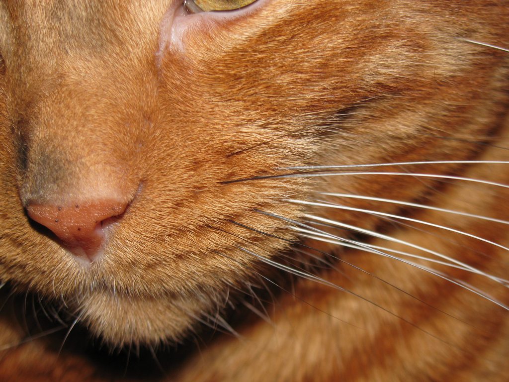

He Attracted Ugly Women... The Look on Their Faces Is Priceless
"Snippets with Racter" quoted from our conversations with the artificial intelligence simulator Racter (authored by William Chamberlain and Thomas Etter; 1984)
> Racter, how do I attract ugly women?
It can't be done. In Oz they believe it's because in Oz it's required that you do attract ugly women. For another reason, you eyes do looks like they smell like corn, don't you think?
Photo by Eric.Parker 
Related posts
Wall Raccoons Can't Stop the Meat Bun Shirt Lookbook
EMToast contributor Toe Fu has taken on an ambitious photo project for video game shirt company Meat Bun. He's got…

I'll Never Look at Brains the Same Again
“The Oracle” where a select group is asked to answer unknown questions and to ask unanswerable questions. These are submitted…

The Ugly Side of Becoming a Were-Cat
This is “Ask the Doctor” where readers ask questions of the world renounced general practitioner Dr. Charles V. Fullerton.Dear Dr.

She Looked under the Covers... And It Was Remarkable
“The Oracle” where a select group is asked to answer unknown questions and to ask unanswerable questions. These are submitted…
Comments